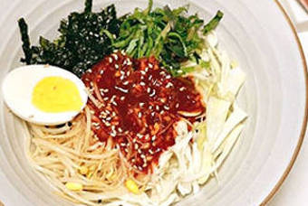
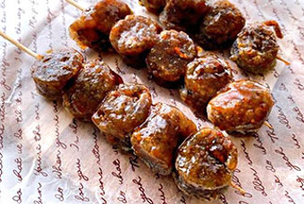

[푸드클래스] 김밀란 셰프
먹물과 한치로 만드는 스파게티 한 그릇
맛의 균형을 잡아 느끼하지 않도록
토마토 페이스트가 숨은 맛 포인트
토마토 페이스트가 숨은 맛 포인트
#이탈리아요리 #먹물파스타
[오늘의 푸드TV] 기분좋은 레시피 Pleasant Recipe.
뚝딱뚝딱 편하게 만들어 먹는 집김밥 어때요?
재료 준비 고민 없이 손쉽게!
상추, 깻잎도 넣어서 맛있게 만들기
상추, 깻잎도 넣어서 맛있게 만들기
#김치김밥 #참치김밥


